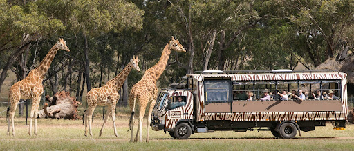

Vansda National Park

Location: Vansda / Waghai region, Navsari district, Gujarat
Nearest town: Waghai
Area: ~24 sq km (protected area and surrounding forest)
Park type: Tropical evergreen and semi-evergreen forest
Best time: November to March
About Vansda
Vansda National Park is a lush, compact forested park in southern Gujarat known for its dense vegetation, waterfalls, and easy trails. It offers a peaceful forest experience and decent wildlife viewing without the large crowds. Waghai serves as the main entry point for visitors.

Wildlife & Birds
The park supports a rich mix of mammals, reptiles, and bird species. Common sightings include:
- Leopards (occasionally)
- Indian bison (gaur), sambar, and barking deer
- Sloth bears (rare)
- Civets, pangolins, and small mammals
- Birds such as hornbills, barbets, and flycatchers
Trails & Attractions
- Guided nature trails and short hikes
- Waterfalls and forest streams
- Bamboo groves and evergreen patches
- Waghai Botanical Garden and local tribal culture
Safari & Visit Options
Vansda is not a large safari park but offers guided walks and small-vehicle forest drives organized by the Forest Department. Birdwatching and photography tours are also available with local guides.
Visitor Guidelines
- Follow park entry rules and carry valid ID.
- Do not feed or disturb animals.
- Use only marked trails and avoid littering.
- Respect local villagers and forest staff.
Contact & Practical Info
Nearest town: Waghai (entry point)
How to reach: Accessible by road from Navsari and Surat; local buses and taxis are available.
Accommodation: Forest rest houses, guesthouses, and small resorts near Waghai.